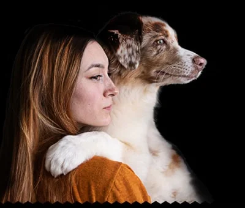

|

|
-
Misión
Promover el bienestar y el cuidado responsable de las mascotas, creando una comunidad donde sus familias puedan compartir experiencias, aprender y disfrutar actividades juntos.
-
Visión
Ser una comunidad referente en el cuidado y la convivencia responsable con las mascotas, donde cada animal reciba respeto, cariño y una vida plena.
|